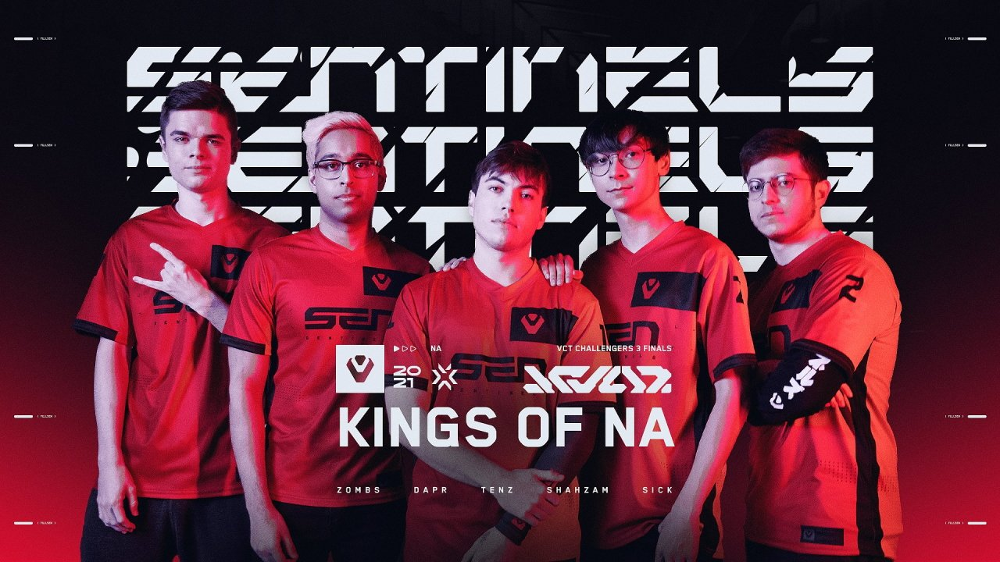
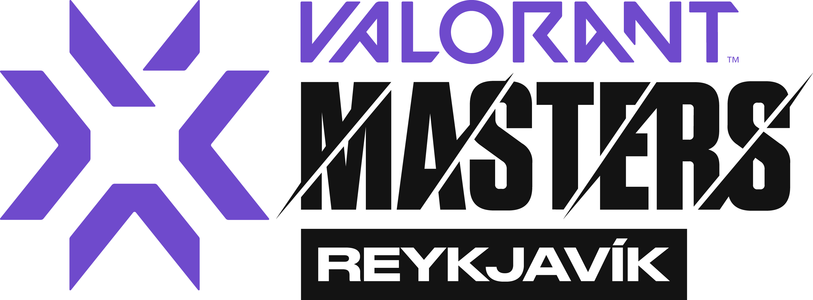
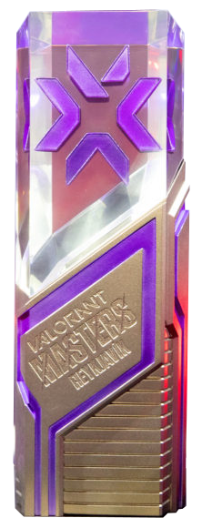

VCT Reykjavik 2021, the VALORANT Champions Tour Reykjavik, was the first international LAN tournament for Riot Games' popular tactical shooter game, VALORANT. The tournament was held from May 24 to May 30, 2021, in Reykjavik, Iceland, and featured 10 of the best VALORANT teams from around the world.

Sentinels emerged as the winners of the tournament
Defeating
Fnatic in the grand finals with a score of 3-0.

Completing an undefeated run they marked their name in Valorant's
history
Completing an undefeated run they marked their name in Valorant's
history
a feat that none has yet to accompish again
- 
- 